Connecting your AI subscription
Why
Your Zo needs a brain to think with. You already pay for one — your ChatGPT or
Claude subscription — so we point Zo at that instead of buying a second one.
Nothing extra to pay. This is the subscription you already have, doing more
work.
First, the names do not match
This is the one part that catches people out. On the Zo screen the buttons are
named after the developer tools, not after what you pay for:
| You pay for | Click Connect next to |
|---|---|
| ChatGPT | Codex |
| Claude | Claude Code |
If you pay for ChatGPT and go looking for a button saying ChatGPT, you will not
find one. It says Codex.
Only pick the one you actually pay for. Connecting the other will ask you to
sign in to an account you do not have.
Getting to the right screen
- Click Settings, then the AI tab
The gear at the bottom of the left-hand menu, then AI, the first tab.
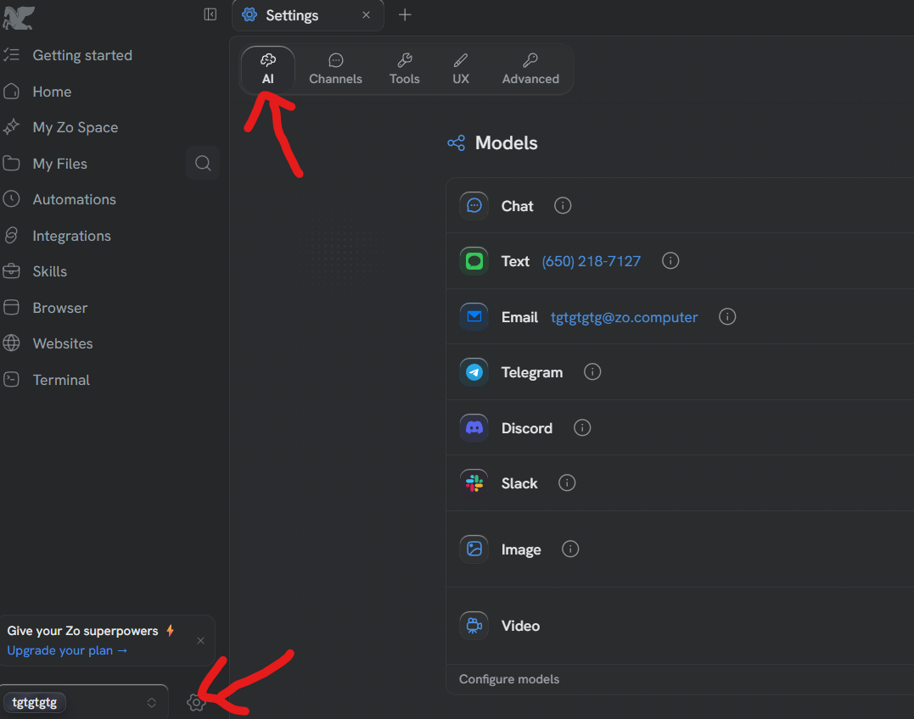
- Scroll down to Providers
Past the list of models, to the part headed Providers.
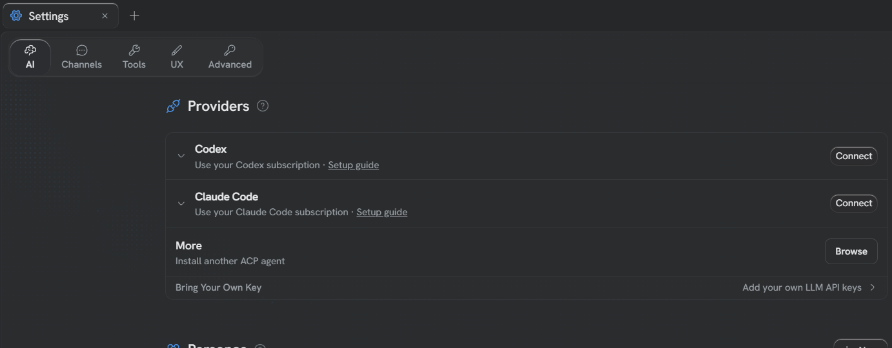
- Click Connect on the one you pay for
Codex if you pay for ChatGPT. Claude Code if you pay for Claude.
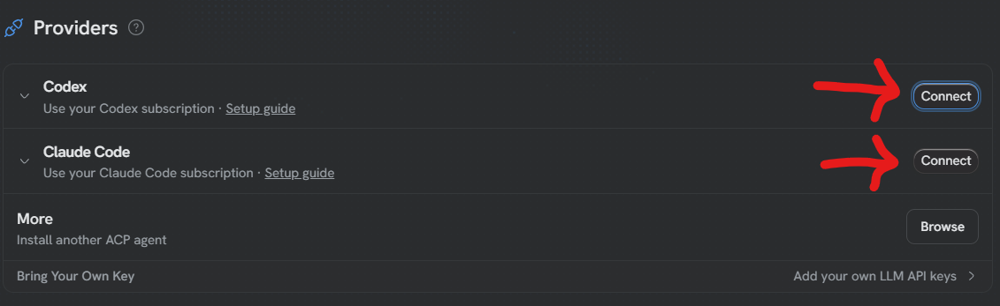
Now follow whichever of the two below matches what you clicked.
If you clicked Codex (you pay for ChatGPT)
The code goes from Zo to the sign-in page. Copy it first, then go.
- Copy the one-time code
Zo shows a short code like
V3QC-I2INZ. Click the copy button beside it.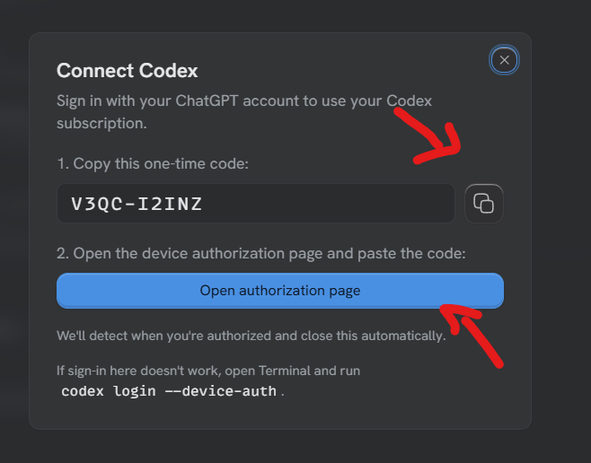
- Click Open authorization page and sign in
Sign in with the ChatGPT account you pay for.
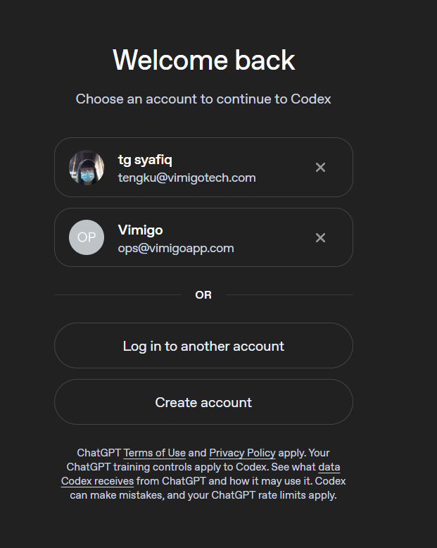
- Paste the code
Paste the code you copied in step 1, and confirm.
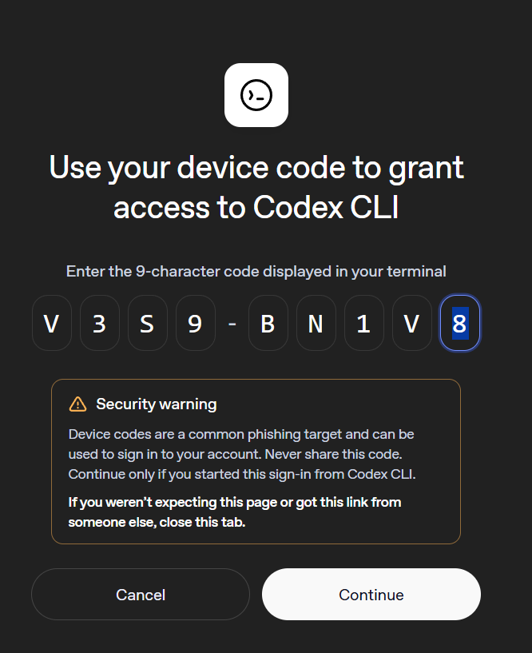
- Turn the models on
Back in Zo, switch the models on so it can use them.
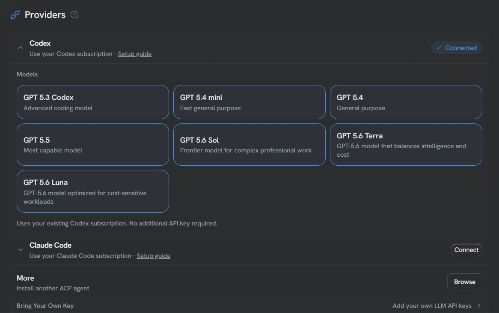
Zo notices on its own when you are done and closes the box.
If you clicked Claude Code (you pay for Claude)
The code goes the other way — from the sign-in page back to Zo. Go first,
copy afterwards.
- Click Open authorization page
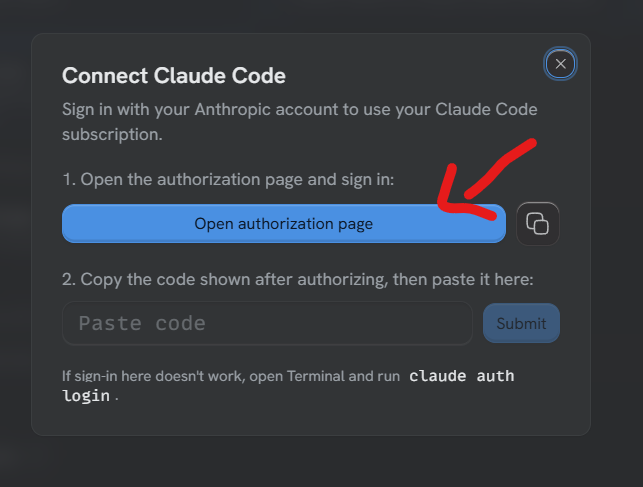
- Sign in, then click Authorize
Anthropic lists what Zo will be allowed to do, then asks you to confirm.
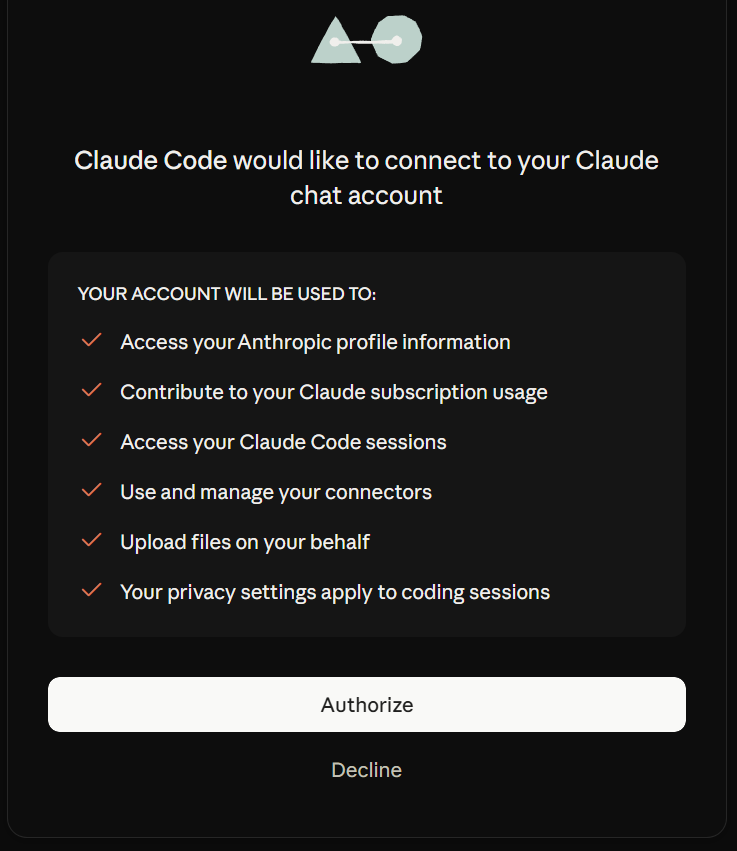
- Copy the code it gives you
After authorizing, Anthropic shows a long code. Copy it.
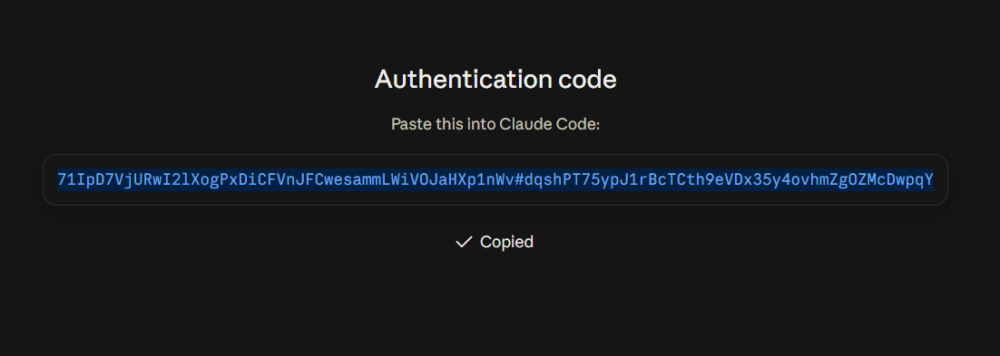
- Paste it back into Zo and click Submit
Back in the Zo box, paste the code into the field and click Submit.
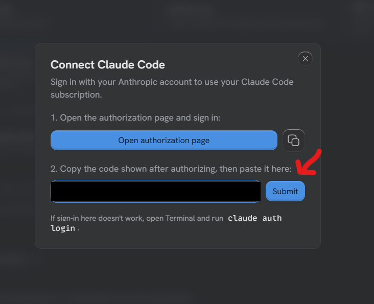
- Turn the models on
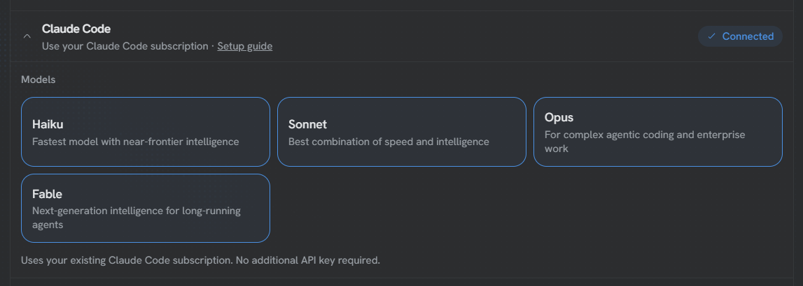
Careful
These two run in opposite directions, so do not go by memory if you have done
the other one before:
• Codex — copy the code, then go and sign in.
• Claude Code — go and sign in, then copy the code back.
If a code is refused, it has probably expired. Close the box, click Connect
again, and use the fresh one.
If your screen doesn't look like this, tell me — I'll walk you through it instead.